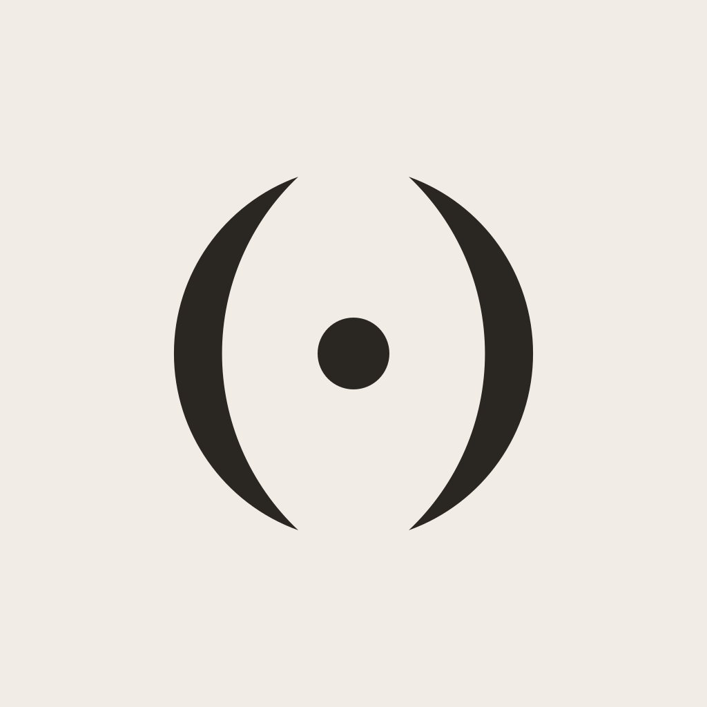
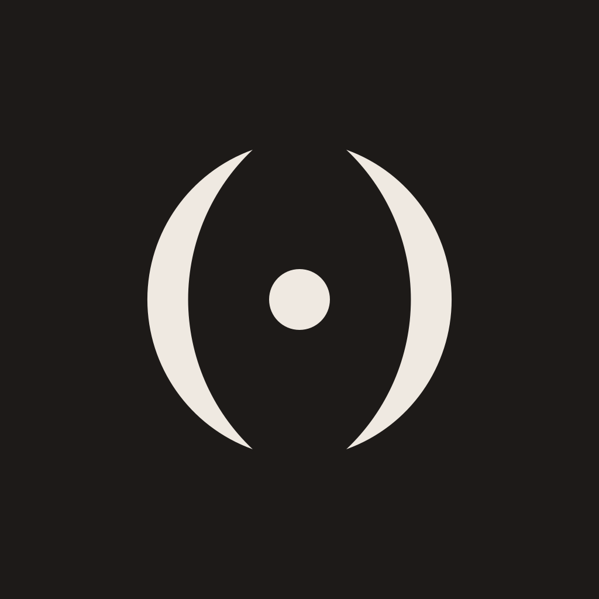

hell 180Gewählt: Konzept 2 „Spiegel“ aus Runde 1. Aya ist ein Palindrom, vorwärts wie rückwärts gleich. Noch einfarbig, die Farben kommen in Phase 4. Der Schriftzug nutzt die Systemschrift, genau wie die App.

hell 180
dunkel 180